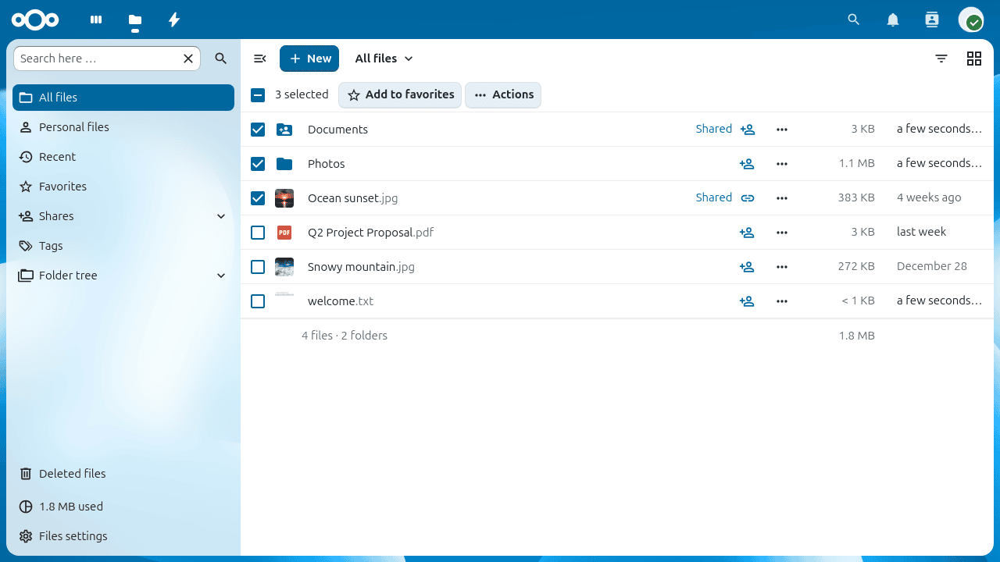

Accessing your files using the Nextcloud web interface
You can access your Nextcloud files with the Nextcloud Web interface and create, preview, edit, delete, share, and re-share files. Your Nextcloud administrator has the option to disable these features, so if any of them are missing on your system ask your server administrator.

Navigating your files
The left sidebar lets you switch between different views of your files. Click a folder name in the file list to open it, and use your browser’s back button or the breadcrumb bar at the top of the file list to return to a previous level.

The sidebar contains the following entries:
- All files
The default view, showing every file and folder you have access to.
- Recent
Files you have viewed or modified recently.
- Favorites
Files and folders you have starred.
- Shares
Files shared with you, by you, or via a public link — all in one view.
- Tags
Browse files by system tag.
- Deleted files
Files you have deleted that are still recoverable from the trash bin.
When you navigate into a folder, a breadcrumb trail appears at the top of the file list so you can jump back to any parent folder with a single click:

File controls
Nextcloud displays thumbnail previews for images, text files, and other supported types — the exact list depends on your server configuration.
Each file and folder row has a three-dot action menu button. Click it to rename, move, copy, download, delete, or mark the item as a favorite. Files that have been marked as a favorite display a star icon:

Nota
You can quickly find all your favorites using the Favorites entry in the left sidebar.
Details sidebar
Select Details from the three-dot action menu to open the details sidebar. The sidebar shows information about the selected file and provides tabbed access to its activity history, sharing options, and version history:

Activity and comments
The Activity tab in the details sidebar shows a chronological log of changes to the file — uploads, edits, shares, and comments. You can leave a comment directly in this tab; comments are visible to everyone who has access to the file:

Searching and filtering
Use the search bar at the top of the page to find files by name across all your files, or type in the search field inside the left sidebar to filter the current view:

Grid view
The Files app defaults to a list view. Click the grid toggle button at the top-right of the file list to switch to a thumbnail grid, which is useful for browsing image folders:

Click the button again to return to the list view.
Uploading and creating files
Click the + button near the top of the file list to upload files from your computer or create new items in the current folder:

The menu offers the following options:
- Upload file
Opens a file picker to upload one or more files from your computer. You can also drag and drop files directly from your file manager onto the file list.
- Upload folder
Uploads an entire folder, preserving its structure.
- New folder
Creates a new empty folder in the current location.
- New document / New spreadsheet / New presentation
Creates a new file using the built-in Nextcloud Text or Office editor, if enabled by your administrator.
Selecting files or folders
Click the checkbox to the left of a file or folder to select it. To select all items in the current folder, click the checkbox in the column header.
With one or more items selected, action buttons appear at the top of the list. You can delete or download all selected items at once. Downloading multiple items produces a ZIP archive.

Nota
If the Download button is not visible, your administrator has disabled this feature.
Moving files
Drag any file or folder and drop it onto a destination folder to move it. You can also use Move or copy from the three-dot action menu to move or copy items to a folder you choose from a picker dialog.
Previewing files
Click a file name to open a preview directly in Nextcloud. Supported formats include images, plain text, PDF, and — depending on your server — office documents and audio files. If Nextcloud cannot preview a file format, it downloads the file to your computer instead.
Video player
You can play videos directly in Nextcloud by clicking the file. Playback depends on your browser and the video codec. See MDN: Supported media formats for a compatibility reference.